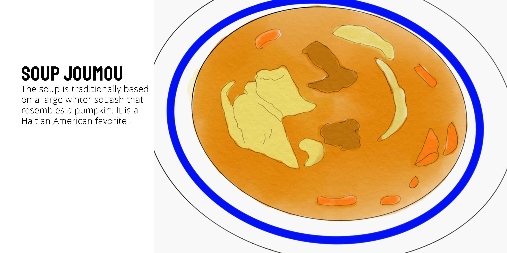

Food
There’s no denying the unique flavor of Haitian food in Miami. As a large contribution of the population, Haitian cuisine can be found frequently. Below are some of the most popular Haitian dishes.
Popular Haitians Dishes



Haitians first arrived to Miami in 1963. After the dictatorship of Duvalier, many working class Haitians decided to flee and make the trip to Miami by boat. In the 1980’s, Haitian businesses were blossoming and Little Haiti was formed in recognition of Haitians in Miami.
The two main languages spoken in Haiti are French and Creole. As an unofficial part of the language, Haitian phrases make their unique contribution to dialect. Below are a few phrases in Creole.
Festivals and delicious cuisine are only a few examples of how vibrant Haitian culture is in Miami. Since 2006, the Little Haiti Cultural Center has provided the community with a space for cultural performances, art exhibitions, and classes in Haitian art forms.
There’s no denying the unique flavor of Haitian food in Miami. As a large contribution of the population, Haitian cuisine can be found frequently. Below are some of the most popular Haitian dishes.